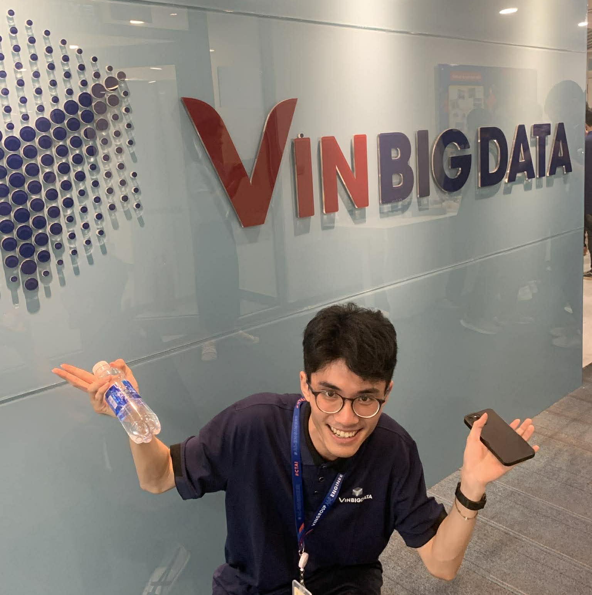
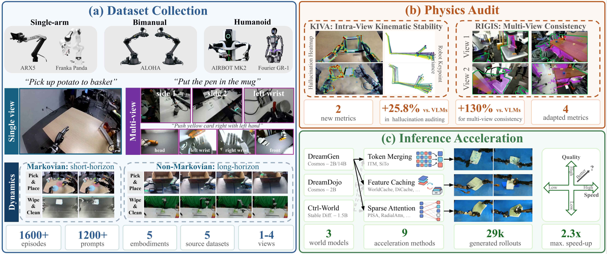
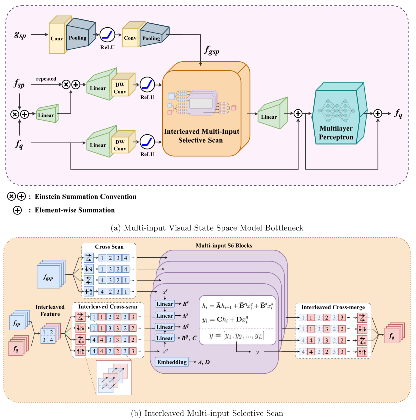
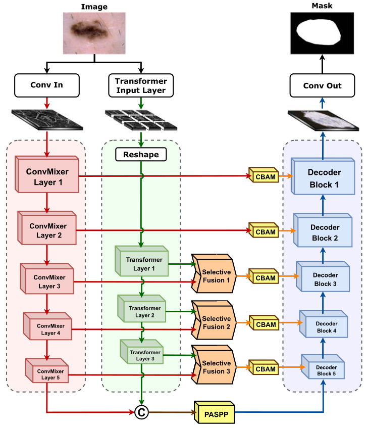
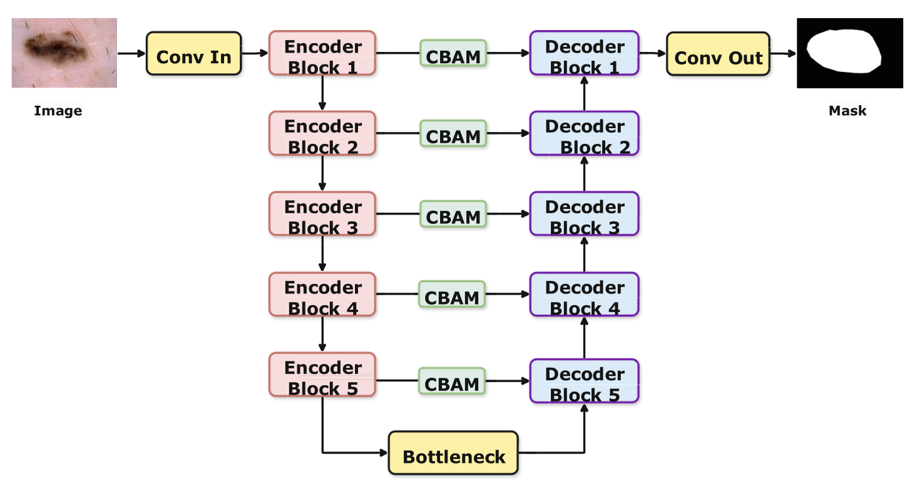

Viet-Thanh Nguyen
AI Research Resident @ VinRobotics
M.Sc. in Control Engineering & Automation @ SEEE-HUST
About
I am currently an AI Research Resident at VinRobotics, focusing on robotics intelligence under the mentorship of Dr. Duy M. H. Nguyen. My research centers on 3D computer vision, robotics learning, and robotics perception.
I recently received my M.Sc. in Control Engineering and Automation from Hanoi University of Science and Technology (HUST), where I was advised by Assoc. Prof. Van-Truong Pham and Assoc. Prof. Thi-Thao Tran, focusing on computer vision and medical image processing. Prior to that, I built my early research foundation in robotics, control algorithms, and soft-actuators manipulations under the guidance of Assoc. Prof. Quy-Thinh Dao.
Education
-
M.Sc. in Control and Automation
Hanoi University of Science and Technology, Hanoi, Vietnam
Advisor: Assoc. Prof. Van-Truong Pham, Assoc. Prof. Thi-Thao Tran
Many thanks to Viettel Research Excellence Scholarship 2025
Experience
-
AI Research Resident
VinRobotics, Hanoi, Vietnam
Research on AI for Robotics
-
AI Engineer
Viettel Artificial Intelligence and Data Services Center (Viettel AI), Hanoi, Vietnam
AI for Robotics (Quadruped, Drone)
-
AI Engineer Trainee
Vingroup Big Data Institute (VinBDI), Hanoi, Vietnam
Gain so much knowledge, memories, and fun. Special thanks to Vingroup AI Engineer Training Program.
Publications
-

Preprint* Equal contribution
arXiv preprint, arXiv:2610.33807
The short version is accepted as a Spotlight at Do Robots Need World Models? .
-
 2026
2026Start Right, Arrive Right: Asynchronous Execution via Initial Noise Selection
* Equal contribution
The Conference on Robot Learning (CoRL) 2026
-

2026Biomedical Signal Processing and Control, June 2026
-

2025Engineering Research Express, July 2025
-

2024International Conference on Green Technology and Sustainable Development 2024 (GTSD 2024)
-
 2024
2024Adaptive Control Using Radial Basis Function Neural Networks for Pneumatic Artificial Muscle Systems
International Journal of Online & Biomedical Engineering, August 2024
-
 2023
2023Measurement, Control, and Automation, December 2023
-
 2023
2023SN Applied Sciences, September 2023
-
 2023
2023Adaptive Radial-Basis Function Neural Network Control of a Pneumatic Actuator
The International Conference on Intelligent Systems & Networks (ICISN), March 2023